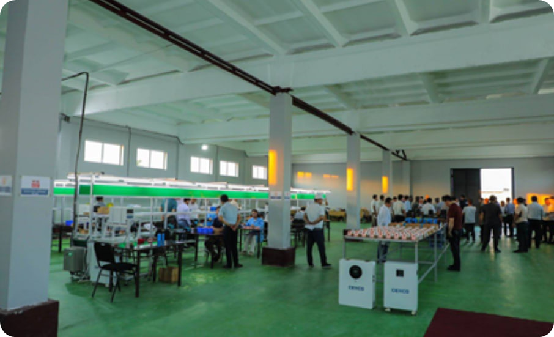

Universitet Haqida
Universitetimiz 1990 yildan beri ta'lim va ilm-fan sohasida yetakchi hisoblanadi. Bizning vazifamiz yangi avlod mutaxassislarini tayyorlash va jamiyat rivojiga hissa qo'shishdir. Talabalarimiz pul olish imkoniyatlari, stipendiyalar, katta kutubxonalar va ilgari surish imkoniyatlari bilan ta'minlanadi.
Video Galereya
Universitet kampusida faoliyatlar.
O'qituvchilar va talabalar dars jarayonida.
Rasmlar Galereyasi

Universitet binosi.

Kutubxona ichki ko'rinishi.

Talabalar hayoti.